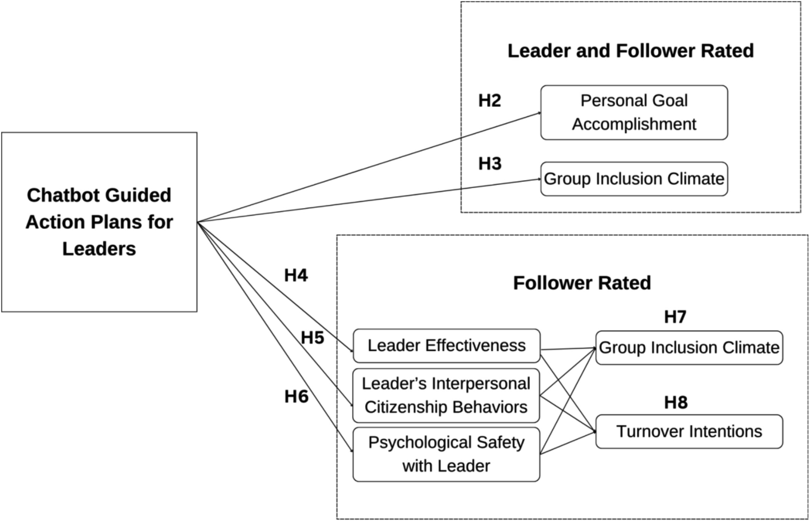

Chatting Towards Inclusivity: A Digital Approach to Inclusion Action Plans and Leader Development

Venue. Human Resource Management (2025)
Abstract. Inclusion is a cornerstone of success for organizations and society, yet inclusion is not guaranteed. Building on inclusive leadership research and relational models theory, we argue that inclusion cannot manifest without systematic effort and planning by leaders. Unfortunately, few resources exist to help leaders plan and enact specific inclusion behaviors. To address this, we introduce the “Leader Success Bot,” an innovative conversational chatbot designed to help leaders develop daily inclusion action plans. Through our immersive longitudinal design and mixed methods data, we advance the taxonomy of inclusive leader behaviors and test the impact of inclusion planning on leaders and followers. We demonstrate how equality matching is an overlooked relational model that is a pivotal relational dynamic for inclusion. Across two studies, our quantitative and qualitative findings show that equitable exchanges by leaders can foster a deeper sense of belonging and community. As leaders interact with the chatbot, both leaders and followers are more likely to accomplish their goals. Additionally, followers' inclusion climate and psychological safety benefited, leading to a decrease in turnover intentions. Our findings underscore the potential of chatbots to support inclusive leadership training and development by providing leaders with a structured, scalable platform for continuous reflection and growth. This research advances theoretical understanding of relational inclusion dynamics and offers practical insights and a scalable tool for HR managers seeking to build more inclusive, psychologically safe cultures.
Link to this page: